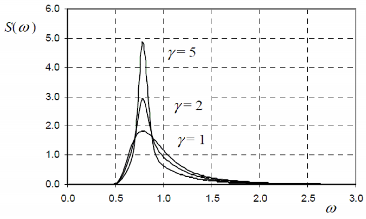
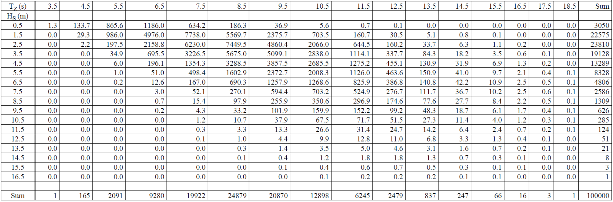
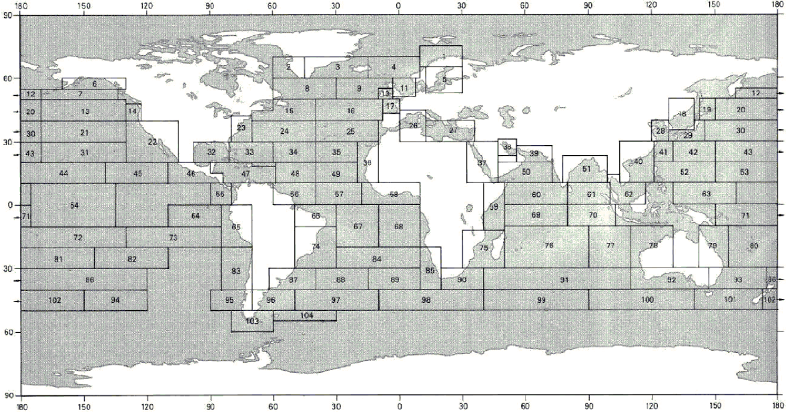

5 Spektralni opis stanja mora
5.1 Spektri valova
Spektar valova (e: wave spectrum), odnosno funkcija spektralne gustoće, predstavlja matematičku raspodjelu valne energije (točnije, varijance izdizanja površine mora) po pojedinim frekvencijama valova u stacionarnom stanju mora. Mjerna jedinica spektralne gustoće obično je \(m^2s\) (ili \(m^2/Hz\)).
Postoji niz standardiziranih idealiziranih spektara, a za analizu brodskih i pomorskih konstrukcija najrelevantniji su Pierson–Moskowitz (PM), odnosno njegova dvoparametarska modifikacija poznata kao Bretschneiderov/ITTC spektar, te JONSWAP spektar. To su jednosmjerni spektri (e: uni-directional spectra), što znači da se radi o jednodimenzionalnim spektrima s jednim vrhom (e: single-peaked spectra), kod kojih nije uključen utjecaj širenja energije valova u raznim smjerovima.
5.1.1 Pierson-Moskowitz (PM) spektar
PM spektar valova koristi se za opisivanje potpuno razvijenog mora (e: fully developed sea), karakteristično za velika oceanska prostranstva gdje vjetar puše dugo i bez ograničenja privjetrišta. Njegov standardni dvoparametarski ITTC oblik (ovisan o značajnoj visini i periodu) zadan je izrazom:
\[ S_{PM}(\omega)=\frac{5}{16}\cdot H_{S}^{2}\omega_{p}^{4}\cdot\omega^{-5}\exp\left(-\frac{5}{4}\left(\frac{\omega}{\omega_{p}}\right)^{-4}\right) \tag{5.1}\]
gdje je:
- \(S_{PM}(\omega)\) – spektralna gustoća energije valova
- \(\omega\) – kružna frekvencija valova u \(rad/s\)
- \(H_S\) – značajna visina vala (e: significant wave height) u metrima
- \(\omega_p = 2\pi / T_P\) – spektralna vršna frekvencija (e: peak frequency), gdje je \(T_P\) vršni period vala.
Kao što je vidljivo iz jednadžbe, oblik “repa” spektra pri višim frekvencijama opada razmjerno s \(\omega^{-5}\), što je fizikalna karakteristika gravitacijskih valova u ravnoteži.
Pierson-Moskowitz spektri valova
5.1.2 JONSWAP spektar
JONSWAP (Joint North Sea Wave Project) valni spektar formuliran je kao empirijska modifikacija PM spektra. On predstavlja stanje mora u razvoju (e: developing sea), karakteristično za ograničena područja s kraćim privjetrištem, poput Sjevernog ili Jadranskog mora. Zadan je izrazom:
\[ S_{J}(\omega)=A_{\gamma}S_{PM}(\omega)\gamma^{\exp\left(-0.5\left(\frac{\omega-\omega_{p}}{\sigma\omega_{p}}\right)^{2}\right)} \tag{5.2}\]
gdje su dodatni parametri:
- \(\gamma\) – bezdimenzionalni parametar vršnog pojačanja (e: peak enhancement factor), koji obično iznosi od 1 do 7 (prosjek \(\gamma = 3.3\)).
- \(\sigma\) – parametar širine spektra (e: spectral width parameter), koji iznosi \(\sigma = 0.07\) za \(\omega \le \omega_p\), te \(\sigma = 0.09\) za \(\omega > \omega_p\).
- \(A_\gamma = 1 - 0.287 \ln \gamma\) – faktor normiranja (e: normalization factor) koji osigurava da ukupna energija spektra (površina ispod krivulje) ostane konzistentna sa zadanom značajnom visinom \(H_S\).
Prema izrazu gore, JONSWAP skalira PM spektar. Za slučaj kada je \(\gamma = 1\), JONSWAP spektar se u potpunosti reducira u PM spektar. JONSWAP spektar daje fizikalno realne rezultate u inženjerskim proračunima samo ako parametri zadovoljavaju granice strmine vala, obično kada vrijedi:
\[3.6 < \frac{T_P}{\sqrt{H_S}} < 5\]
Na priloženom grafu zorno je prikazano kako parametar \(\gamma > 1\) drastično pojačava i izoštrava vrh (e: spectral peak) JONSWAP spektra u odnosu na ravniji i širi Pierson-Moskowitz spektar (\(\gamma = 1\)) za iste ulazne vrijednosti (\(H_S = 4.0\text{ m}\), \(T_P = 8.0\text{ s}\)). Zbog ove oštrine, brodovi projektirani za oceansku plovidbu (PM spektar) ponekad mogu doživjeti snažniju rezonanciju i opasnija kretanja u zatvorenim morima (JONSWAP spektar) ako im se prirodna frekvencija poklopi s uskim vrhom spektra.

5.1.3 Jadransko more kao primjer zatvorenog mora
Jadransko more je tipičan primjer mora ograničenog privjetrištem (e: fetch-limited sea). Najveće privjetrište iznosi oko 800 km duž osi sjeverozapad–jugoistok, dok je poprečno privjetrište znatno kraće (150–200 km). Zbog toga se valovi na Jadranu razvijaju pod utjecajem dva dominantna vjetra:
- Bura (NE): Puše okomito na istočnu obalu s vrlo kratkim privjetrištem. Stvara kratke, strme valove visokih frekvencija. Značajna visina rijetko prelazi \(H_S = 3\)–\(4\) m, a periodi su kratki (\(T_P = 4\)–\(6\) s). Za opis bure najprikladniji je JONSWAP spektar s visokim \(\gamma\) (4–7).
- Jugo (SE): Puše duž osi Jadrana s mnogo većim privjetrištem. Može razviti veće valove (\(H_S\) do 5–6 m u ekstremnim slučajevima) s duljim periodima (\(T_P = 7\)–\(10\) s). JONSWAP spektar sa \(\gamma = 2\)–\(4\) dobro opisuje ove uvjete.
Usporedba s otvorenim oceanom (Sjeverni Atlantik) gdje \(H_S\) rutinski doseže 8–12 m s periodima \(T_P = 12\)–\(18\) s jasno pokazuje ograničenja zatvorenih mora.
5.2 Dijagram raspršenja
Za opis dugoročne klime valova na nekom geografskom području koristi se dijagram raspršenja (e: wave scatter diagram). On definira statističku vjerojatnost pojave (ili učestalost pojavljivanja) različitih stacionarnih stanja mora tijekom dužeg vremenskog perioda (npr. jedne godine ili cijelog životnog vijeka broda).
Svako pojedino stanje mora u dijagramu definirano je kombinacijom dva parametra: značajnom visinom valova (\(H_S\)) na jednoj osi i nultim periodom (\(T_Z\)) (ili vršnim periodom \(T_P\)) na drugoj osi. Dijagram je zapravo dvodimenzionalna tablica (matrica) u kojoj svaki broj predstavlja koliko se puta određena kombinacija visine i perioda vala pojavila na svakih 100,000 ili 1,000,000 promatranja.
Na slici je prikazan važan referentni dijagram raspršenja (definiran kroz IACS Rec. 34), koji predstavlja najgrublje uvjete plovidbe i koristi se kao standard za proračun ekstremnih globalnih opterećenja brodskog trupa i procjenu zamora materijala.

Oceani su podijeljeni u specifične nautičke zone (e: nautical zones / wave areas) prema Global Wave Statistics, a za svaku zonu postoji pripadajući dijagram raspršenja. Kombiniranjem dijagrama iz zona kroz koje brod planira ploviti, dobiva se operativni profil specifičan za taj projekt.

5.3 Kratkoročna statistika slučajnog stanja mora
Dok spektar valova daje raspodjelu energije po frekvencijama, vjerojatnosni ili probabilistički pristup analizira statističku raspodjelu samih kinematičkih veličina (elevacija, amplituda, visina) u kratkom vremenskom prozoru (npr. 3 sata), ne uzimajući u obzir redoslijed kojim se te vrijednosti pojavljuju u vremenu.
5.3.1 Gaussova razdioba za elevaciju površine
Osnovna je pretpostavka da je izdizanje morske površine, \(\eta(t)\), stacionaran slučajan proces distribuiran po zakonu Gaussove funkcije gustoće vjerojatnosti (e: Gaussian probability density function - PDF) s nultom srednjom vrijednosti (razina mirnog mora). To je moguće jer se uzburkano more sastoji od beskonačnog broja harmonika sa slučajnim faznim pomacima.
Funkcija gustoće vjerojatnosti, \(f(\eta)\), koja opisuje vjerojatnost da izdizanje mora poprimi određenu vrijednost glasi:
\[f(\eta) = \frac{1}{\sqrt{2\pi m_0}} \exp\left(-\frac{\eta^2}{2m_0}\right)\]
gdje je \(m_0\) nulti spektralni moment tj. ukupna površina ispod krivulje spektra. Iz ove jednadžbe proizlazi ključna veza spektralne i statističke analize: \(m_0\) je jednak varijanci slučajnog procesa \(\eta(t)\).
Gaussova razdioba elevacije površine
5.3.2 Rayleighova razdioba za amplitude i visine valova
Dok se sama površina mora ponaša po Gaussovom zakonu, za statistički opis amplituda valova (\(a\)) i valnih visina (\(H\)) godinama se uspješno koristi Rayleighova razdioba (e: Rayleigh distribution). Da bi se Rayleighova razdioba mogla primijeniti, uvodi se pretpostavka o uskopojasnom procesu (e: narrow-band process). To znači da su valne frekvencije grupirane blizu jedne dominantne frekvencije. U tom slučaju, valna visina može se aproksimirati kao dvostruka amplituda, tj. \(H = 2a\).
Općeniti izraz za funkciju gustoće vjerojatnosti Rayleighove razdiobe za amplitude valova (\(a\)) glasi:
\[f(a) = \frac{a}{m_0} \exp\left(-\frac{a^2}{2m_0}\right)\]
Supstitucijom \(a = H/2\), dobivamo inženjerima najvažniju funkciju gustoće vjerojatnosti za visine valova (\(H\)):
\[f(H) = \frac{H}{4m_0} \exp\left(-\frac{H^2}{8m_0}\right)\]
Rayleighova razdioba amplituda i visina
Iz integracije ove Rayleighove razdiobe proizlazi najslavnija i najkorisnija formula u pomorstvenosti, koja direktno povezuje statistiku valova s valnim spektrom, a to je izraz za značajnu visinu vala (\(H_S\)):
\[H_S \approx 4\sqrt{m_0}\]